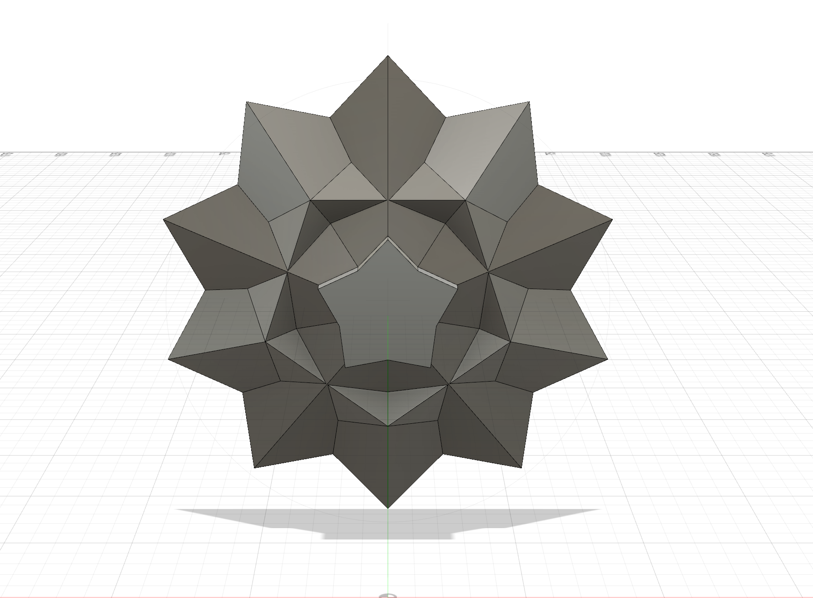
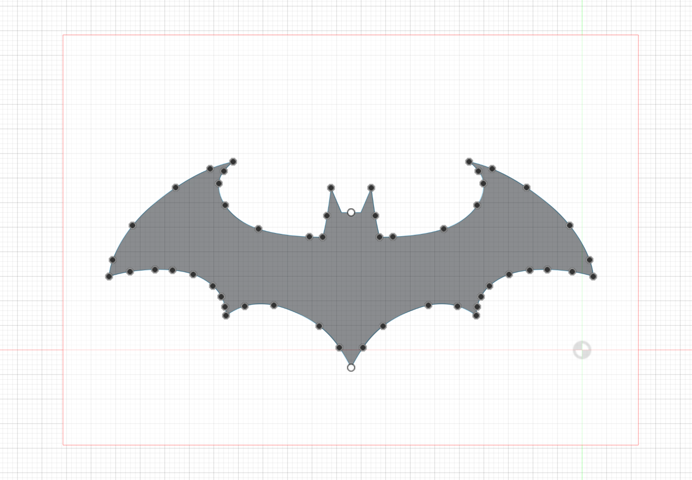
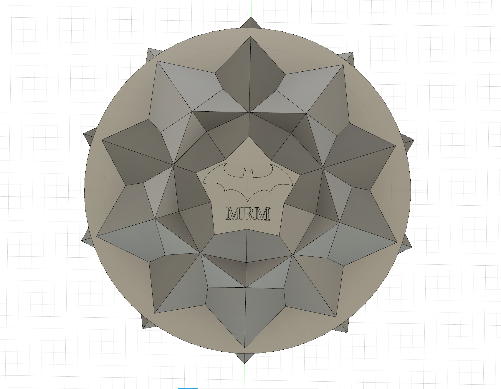
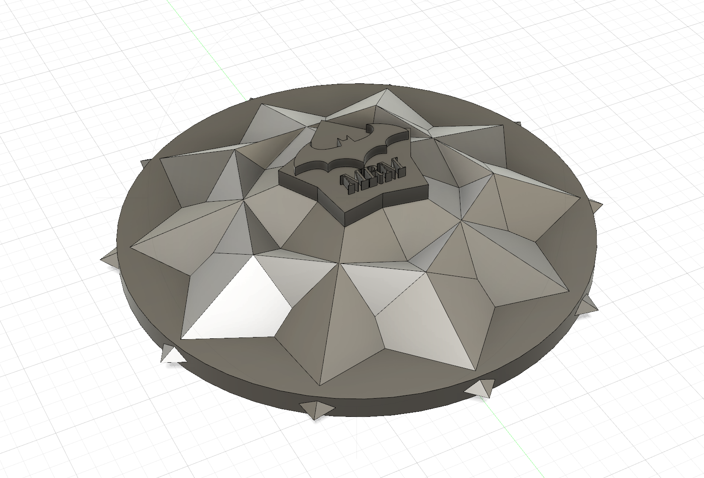
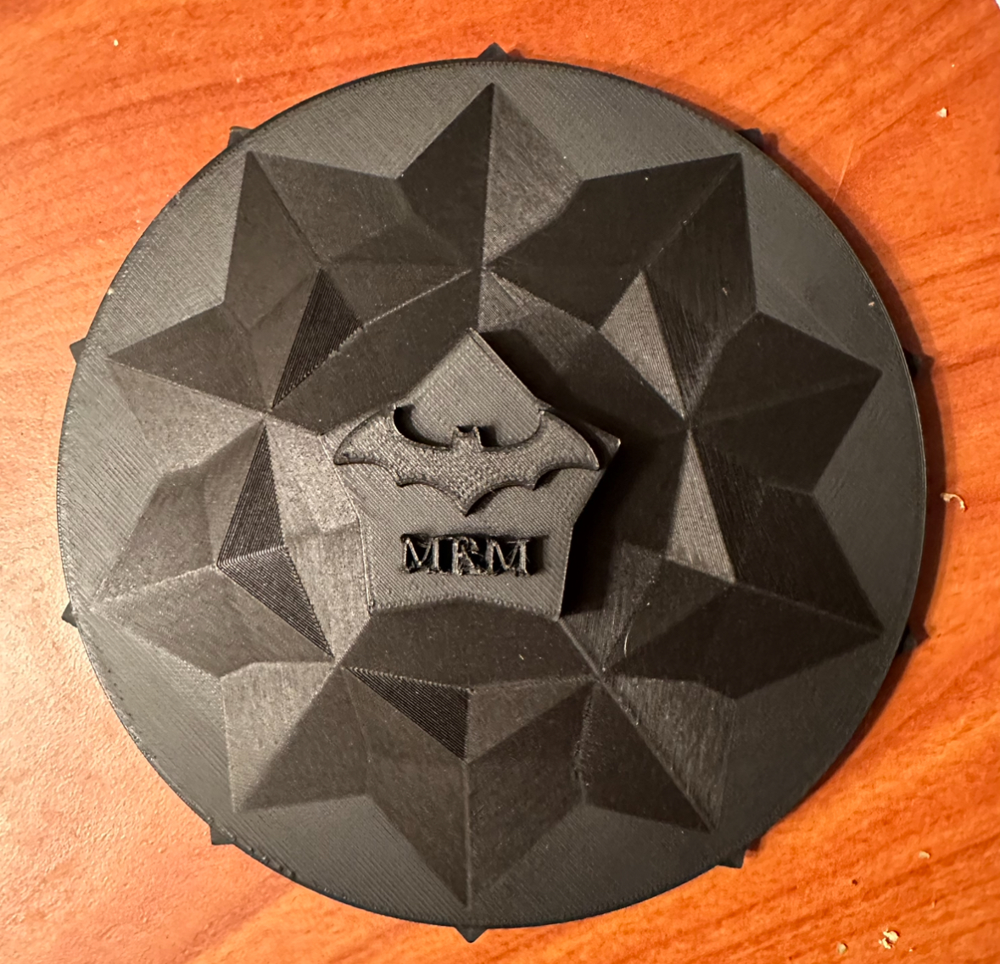

Week 5: 3D Design and Printing
This week the assignment was to design and print a small object that could not be (easily) made by subtractive methods, as well as scan something using a photogrammetry, LIDAR, or other application.
1. When Two Cinematic Universes Collide
3D modelling definitely is not my strong suit, so this week I wanted to do something challenging but fun. I decided to make a wall decoration that combined my love for batman (especially Christian Bale era batman) and my love for the MCU. I chose to design and model a Captain America abstract shield with the batman logo on the star to represent this collision of worlds. (I also added my initials for a personalized touch).
List of materials and resources used:
- Prusa 3D printer
- Autodesk Fusion 360 software for modelling
Steps for making the "When Two Cinematic Universes Collide" wall decoration:
-
Modelling the Design in Fusion
  
- I used a combination of extruded polygons and triangles to create the shield part. This included extruding in and out of layers to create the desired abstract effect. I also used mirroring and slicing methods to get the flat back of the star.
- I added the circle base of the shield at the bottom to finish off the Captain America shield.
- Next I used a downloaded image of the batman logo and the canvas method to outline the logo and create a body.
- I then combined both designs and added the spikes on the circumference of the shield to add an edgy feel to it.
-
Printing it!
 
- Links to download my files
2. Mickey Mouse Scan
For the second part of my assignment I decided to scan my mickey mouse keychain. I faced difficulties due to the scanner not picking up Mickey's dark body well. However, with Kassia's assistance, I covered the keychain in corn starch in order for the scanner to pick it up. This worked out better than I thought it would have and the final result is below. (For some reason the color didnt transfer on the ply/stl files from revo scan.)

Fin.